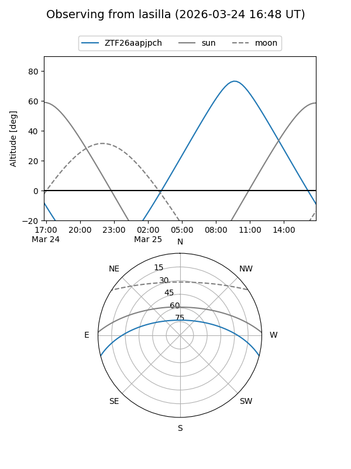
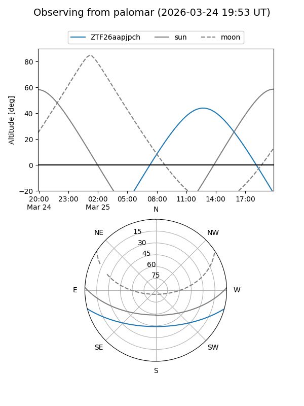

ZTF26aapjpch
Target ZTF26aapjpch at 2026-03-24 13:41
Aliases and brokers:
FINK: link
Lasair: link
ALeRCE: link
alt names
ZTF26aapjpch (ztf,fink_ztf)
Coordinates:
equatorial (ra, dec) = 256.4792,-12.56692
equatorial (HMS+DMS) = 17:05:55.01,-12:34:00.90
galactic (l, b) = (8.8179,+16.66402)
Flags:
Photometry:
last ztfg=19.56
1 ztfg detections
Lightcurve
Visibility


Additional plots